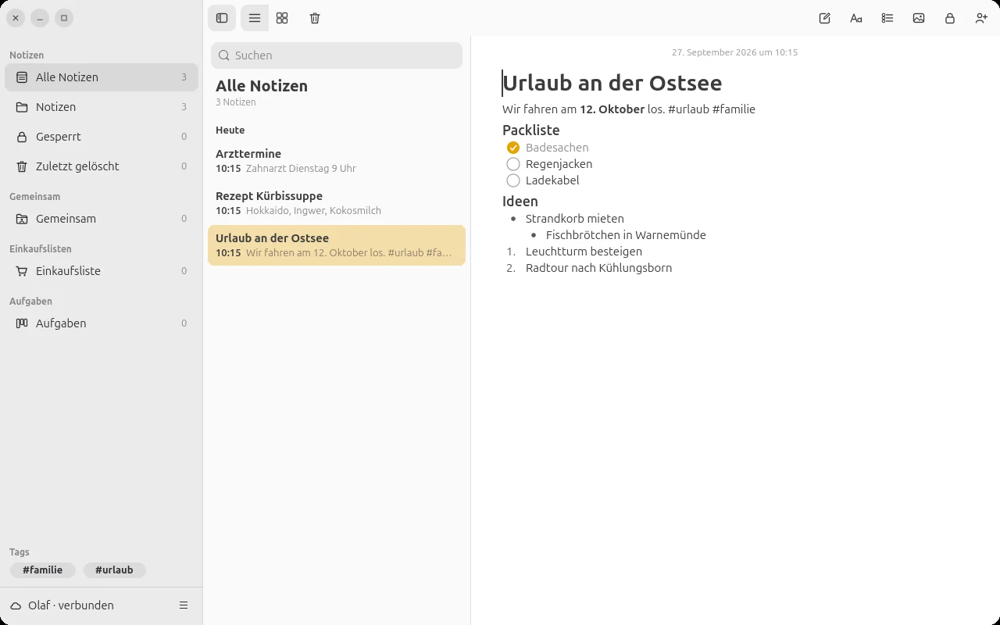
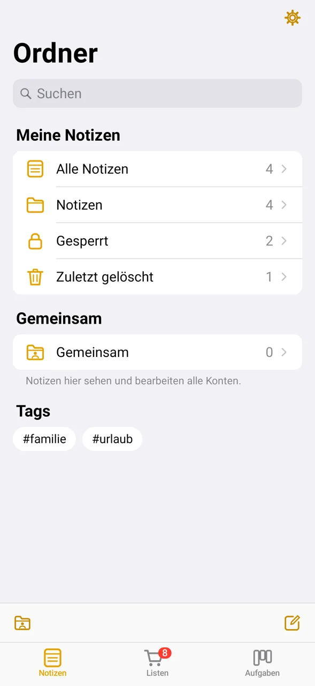
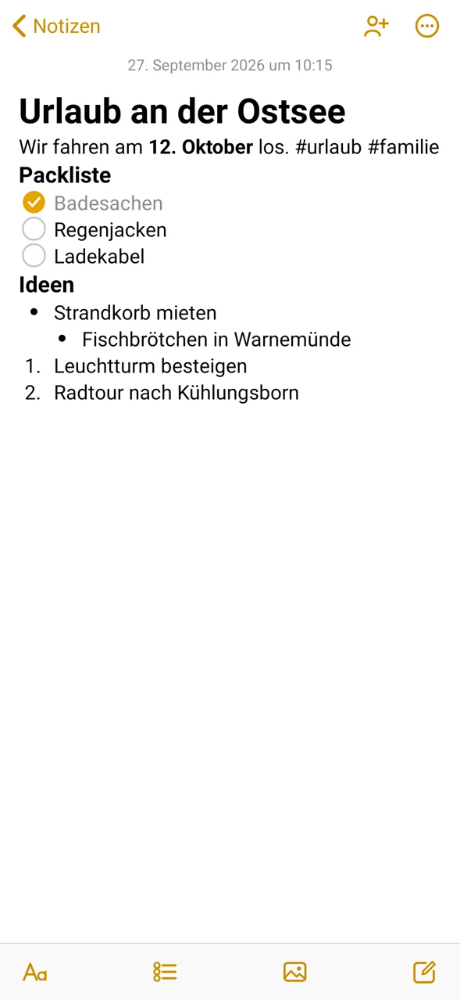
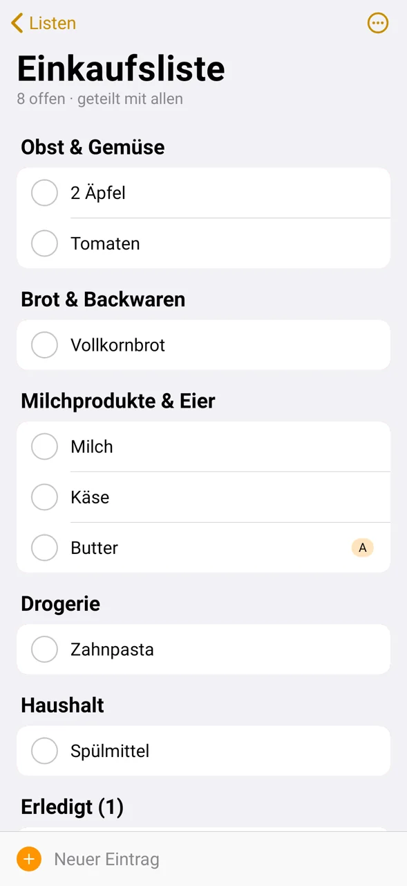
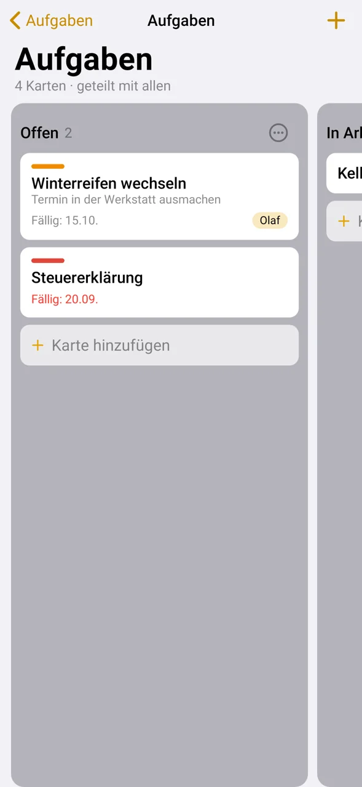
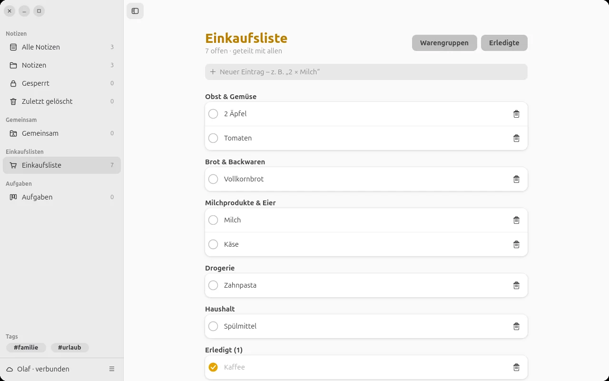
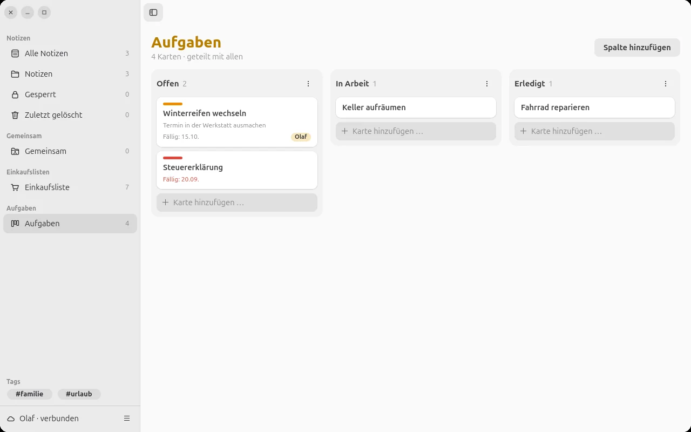

LiNotes
Notizen, Einkaufslisten und Aufgaben für die Familie – so einfach wie Apples Notizen, aber auf dem eigenen Server.
Version 2.0.2 · Android und Ubuntu · Ende-zu-Ende verschlüsselt
Notizen, Einkaufslisten und Aufgaben für die Familie – so einfach wie Apples Notizen, aber auf dem eigenen Server.
Version 2.0.2 · Android und Ubuntu · Ende-zu-Ende verschlüsselt
Auf dem Handy und am Rechner, allein oder gemeinsam – alles gleicht sich in Sekunden ab.
Titel, Überschriften, Checklisten mit Kreisen, Aufzählungen, Fotos, #Tags, angeheftete Notizen und „Zuletzt gelöscht“.
Einzelne Notizen, ganze Ordner, Listen oder Boards – mit genau den Personen, die du auswählst. Alles andere bleibt nur für dich.
Einträge landen automatisch in der richtigen Warengruppe. Was einer abhakt, sieht der andere sofort.
Kanban mit Spalten „Offen“, „In Arbeit“, „Erledigt“, mit Fälligkeit, Zuständigkeit und Farben.
Ohne Netz arbeitest du einfach weiter – oder du nutzt LiNotes ganz ohne Server als Notizen-App auf dem Gerät. Einen Server kannst du später eintragen.
Neues Gerät? 6-stelligen Code eintippen oder QR-Code scannen – fertig. Kein Passwort, das jemand erraten könnte.
Gestaltet nach Apples Richtlinien für das iPhone: große Titel, klare Listen, Tab-Leiste unten.






Niemand liest mit – kein Konzern und auch nicht, wer den Server betreibt.
Notizen, Listen, Boards, Ordnernamen und Bilder werden auf deinem Gerät verschlüsselt (AES-256), bevor sie den Server erreichen. Der Server speichert nur unlesbare Daten.
Die Schlüssel liegen nur auf deinen Geräten. Wer den Server betreibt, kann weder deine Notizen noch die anderer Personen lesen.
Bevor ihr teilt, bestätigt ihr euch einmal gegenseitig per Code oder QR-Code. So kann niemand einen falschen Schlüssel unterschieben.
Die Apps enthalten keine Werbung, keine Statistik-Dienste und senden nichts an Dritte. Android-Sicherungen in die Google-Cloud sind abgeschaltet.
Geheimes zusätzlich mit Notizen-Passwort sperren – auf dem Handy mit Fingerabdruck, PIN oder Muster entsperren.
Pro Notiz einstellbar, wie lange der Inhalt auf dem Handy bleibt (immer, 90, 30, 7 Tage oder nur auf dem Server).
Keine Cookies, kein JavaScript, keine eingebundenen Dienste von Dritten, keine Zugriffsprotokolle.
Für Android 8 und neuer.
Am einfachsten: Auf dem Handy mit installiertem F-Droid diesen Link antippen – F-Droid öffnet sich und fragt, ob die Quelle hinzugefügt werden soll:
Oder am Rechner: Diesen QR-Code in F-Droid scannen (Einstellungen → Paketquellen → + → QR-Code-Symbol) oder mit der Handykamera:

Von Hand: In F-Droid unter Einstellungen → Paketquellen diese Adresse eintragen:
https://volkskamera.goip.de/fdroid/repoFingerabdruck der Paketquelle: 8DA9DEF44C65856A1B098DB7BF876D48514997EF17C7256E23E91EAC6C486500
Signatur der App (SHA-256): 4673c3322dbd4ebbde9746b3f3fe5ccbb06414147797089a394c417b1f0f0819
Für Ubuntu 26.04 und andere Systeme mit GTK 4 und libadwaita.
sudo apt install python3-gi gir1.2-gtk-4.0 gir1.2-adw-1 gir1.2-secret-1 python3-cryptography
wget https://linotes.goip.de/download/linotes-ubuntu-2.0.2.tar.gz
tar xzf linotes-ubuntu-2.0.2.tar.gz -C ~/.local/share
~/.local/share/linotes/install.shDanach steht LiNotes im Anwendungsmenü. Dein Kontoschlüssel wird im Schlüsselbund von Ubuntu gespeichert.
Prüfsummen: SHA256SUMS
So richtest du LiNotes ein – Schritt für Schritt.
Du hast keinen Server? Wähle beim ersten Start „Ohne Server nutzen“ – dann ist LiNotes einfach eine Notizen-App, und alles liegt verschlüsselt nur auf deinem Gerät. Einen Server kannst du jederzeit später eintragen (Einstellungen → „Mit Server verbinden …“); deine Notizen werden dann hochgeladen.
Direkt nach dem Anlegen bietet die App an, eine Schlüsseldatei zu speichern. Wähle eine Passphrase und lege die Datei z. B. auf einen USB-Stick an einen sicheren Ort. Verlierst du alle Geräte, kommst du nur mit dieser Datei wieder an deine Notizen – niemand sonst kann sie wiederherstellen. Später: Einstellungen → „Schlüsseldatei sichern“ (Ubuntu: Kontomenü).
Bevor ihr etwas teilt, verifiziert ihr euch einmal: Einstellungen → Personen → Person antippen (Ubuntu: Kontomenü → Personen → „Verifizieren“). Dein Gerät zeigt einen Code; auf dem Gerät der anderen Person erscheint eine Anfrage, dort den Code eintippen, vorlesen lassen oder den QR-Code scannen.
Notiz, Ordner, Liste oder Board lange gedrückt halten (Ubuntu: Rechtsklick) → „Teilen …“ und die Personen auswählen. Wird ein Ordner geteilt, gilt das für alle Notizen darin. Entfernst du jemanden, wird automatisch neu verschlüsselt.
In einer Notiz „Mehr“ → „Notiz sperren“. Beim ersten Mal legst du ein Notizen-Passwort fest. Auf dem Handy kannst du in den Einstellungen das Entsperren mit Fingerabdruck, PIN oder Muster einschalten. Geteilte Notizen können nicht gesperrt werden.
Einstellungen → „Notizen behalten“ legt fest, wie lange Notizen nach der letzten Benutzung auf dem Handy bleiben (Standard: 90 Tage). Pro Notiz geht das über „Mehr“ → „Auf dem Gerät behalten“. Danach wird die Notiz beim Öffnen verschlüsselt vom Server geladen. Angeheftete Notizen, Listen und Boards bleiben immer auf dem Handy.
LiNotes läuft auf jedem kleinen Linux-Rechner – z. B. einem Raspberry Pi.
Voraussetzungen: Debian, Ubuntu oder Raspberry Pi OS, eine (DynDNS-)Domain, die auf den Rechner zeigt, und offene Ports 80 und 443.
wget https://linotes.goip.de/download/linotes-server-2.0.2.tar.gz
tar xzf linotes-server-2.0.2.tar.gz
sudo linotes-server/install.sh notizen.example.orgDas Skript richtet alles ein – Dienst, nginx, HTTPS-Zertifikat und eine nächtliche Sicherung – und zeigt am Ende den ersten Einladungscode. Die Serveradresse (hier notizen.example.org) gibst du dann in der App ein. Weitere Einladungscodes erzeugst du direkt in der App unter „Personen“.
Der Server kann keine Inhalte lesen: Er speichert nur verschlüsselte Daten, keine Passwörter und keine Zugriffsprotokolle.